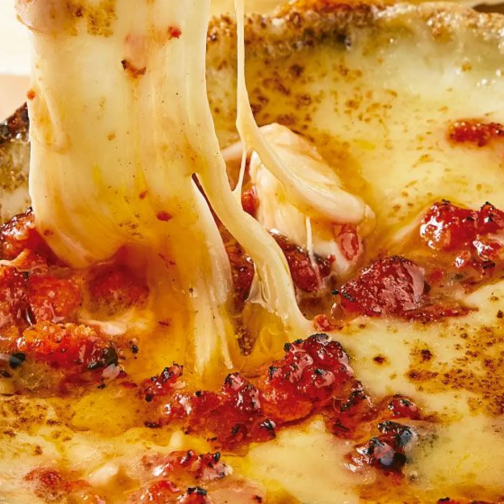

Choriqueso

Description
Choriqueso is a flavorful Mexican appetizer consisting of melted cheese
mixed with spicy, crumbled chorizo sausage. It's served hot and bubbly,
perfect for scooping up with warm tortillas or tortilla chips.
Ingredients:
- 400 grams of chorizo
- 400 grams of manchego cheese, cubed
- 12 flour tortillas
How to make it
Prepare the chorizo
- Sauté the chorizo in a pan over low heat until it is browned.
Add cheese
-
Drain the excess fat and divide the chorizo into four small pans, add
the cheese, and heat over low until the cheese melts.